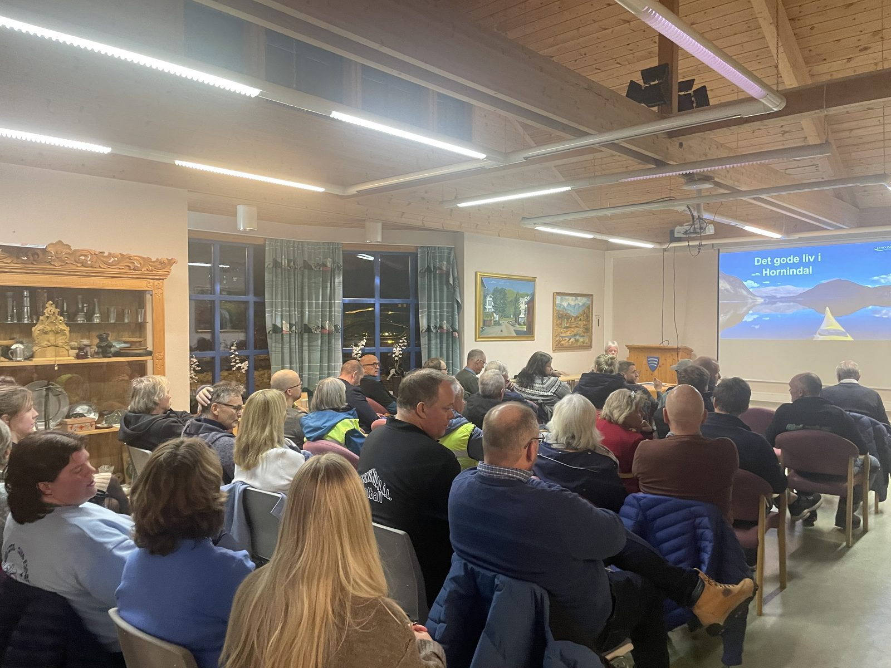
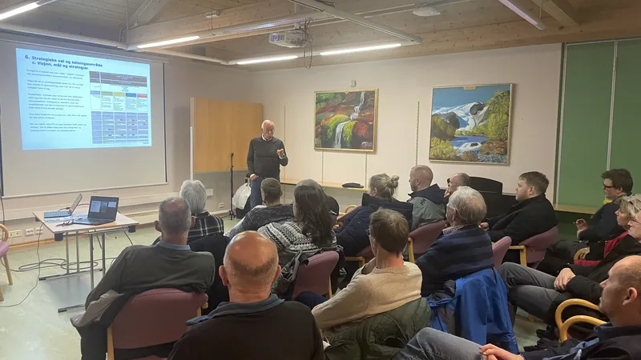
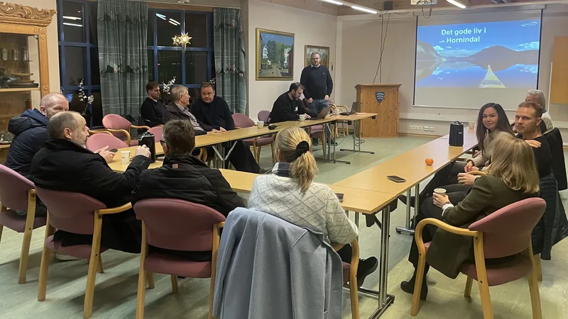
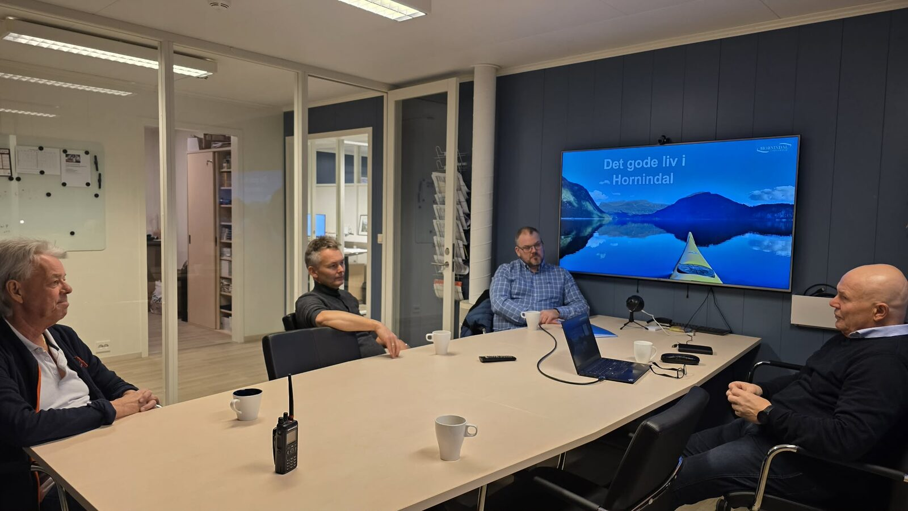
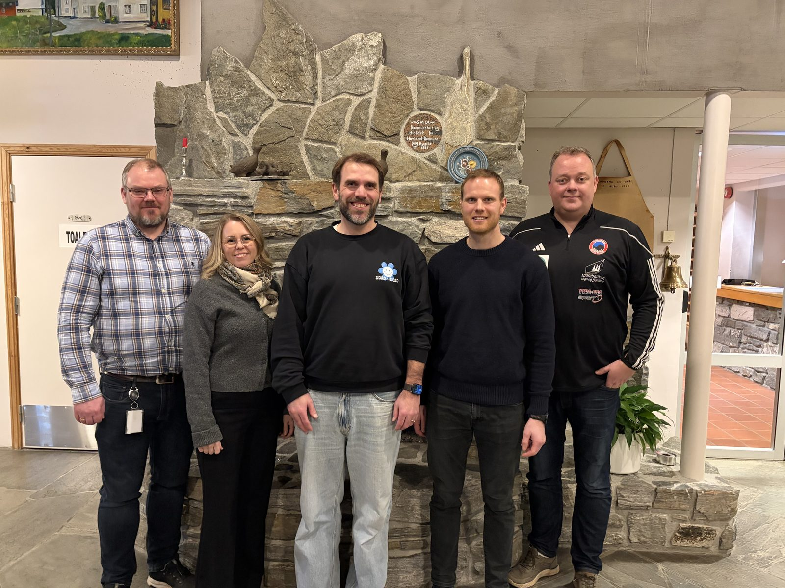
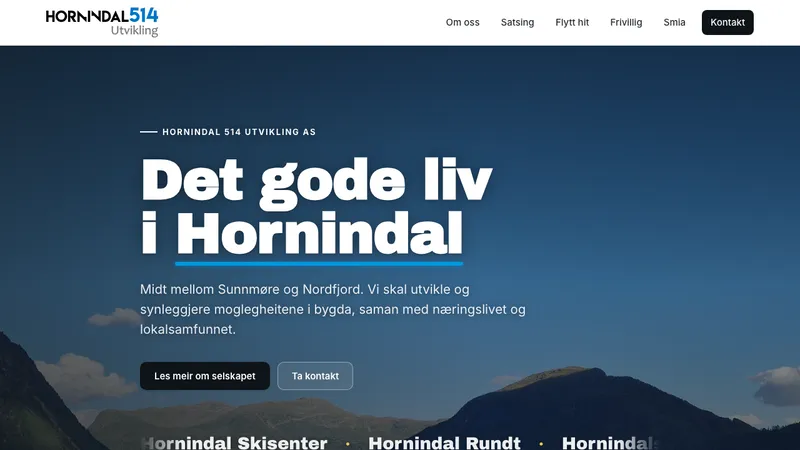
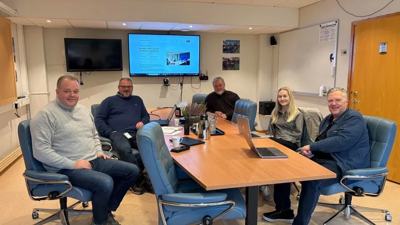
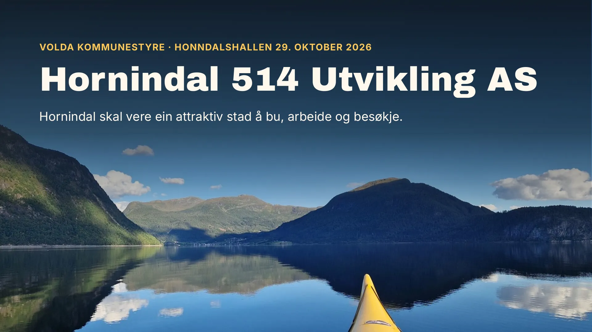
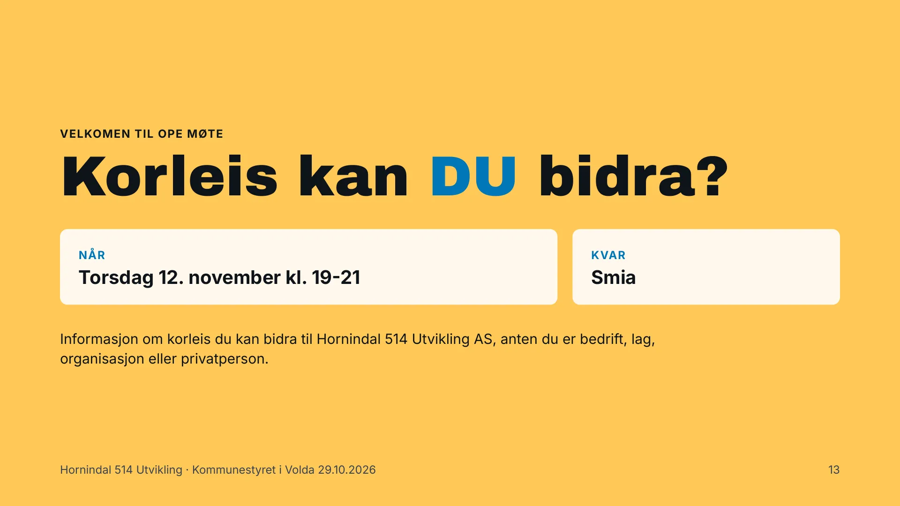

01
Møteplassar for næringslivet
Fire samlingar i året, som frukostmøte, kurs og faglege samlingar, der bedriftene kan dele erfaringar og finne nye samarbeid. Innhaldet lagar vi saman med deltakarane.
Ope møte torsdag 12. november kl. 19-21 på Smia. Kom og høyr korleis du kan bidra til Hornindal 514 Utvikling, anten du er bedrift, lag, organisasjon eller privatperson. Legg til i kalender
Hornindal 514 Utvikling AS
Midt mellom Sunnmøre og Nordfjord. Vi skal utvikle og synleggjere moglegheitene i bygda, saman med næringslivet og lokalsamfunnet.
Måla våre for dei tre første åra
Om oss
Hornindal 514 Utvikling AS er etablert av Hornindal Grendeutval for å utvikle og synleggjere moglegheitene i Hornindal, ein viktig del av Volda kommune og eit knutepunkt mellom Sunnmøre og Nordfjord. Målet er at lokale ressursar, kompetanse og initiativ skal skape verdi for dei som bur og driv verksemd her, og for dei som kjem på besøk eller vil etablere seg.
Selskapet byggjer vidare på det grundige arbeidet i prosjektet «Det gode liv i Hornindal» frå 2012 og samarbeider tett med Volda kommune, Høgskulen i Volda, Nordfjordkompaniet, lokalt næringsliv og frivillige.
Selskapet jobbar med næringsutvikling og bulyst, medan Hornindal Grendeutval har den politiske rolla overfor kommunen.
I dag eig Hornindal Grendeutval alle aksjane. Styret ser på korleis eigarskapen skal vere vidare, med privatpersonar, bedrifter, kommunen og andre som moglege eigarar. Styret er ulønt og jobbar frivillig. Etter vedtektene (PDF) skal selskapet ikkje dele ut utbyte til eigarane, og eit eventuelt overskot skal gå tilbake til arbeidet. Selskapet forvaltar heller ikkje tilskot, lån eller investeringsmidlar. Sjå òg oppføringa i Enhetsregisteret.
Smia på Grodås er tenkt som base for selskapet, og skal vere ein viktig møteplass der idear kan utviklast vidare.
Satsingsområde
Fire samlingar i året, som frukostmøte, kurs og faglege samlingar, der bedriftene kan dele erfaringar og finne nye samarbeid. Innhaldet lagar vi saman med deltakarane.
Fagleg støtte til etablerte verksemder og til deg som vil starte noko nytt, og hjelp til å finne rett kompetanse i bygda og i regionen.
Minst eitt større arrangement i året som skil seg ut frå det som alt finst. Vi fangar opp idear, koplar aktørar og lagar arrangementa saman med lokale krefter.
Tilbod, verksemder, kultur, natur og opplevingar samla på éin stad, så det blir enklare å bli kjend med bygda for dei som bur her, flyttar hit eller er på besøk.
Hornindal skal vere ein attraktiv stad å bu, arbeide og besøkje.
Difor vil vi vere ei samlande kraft for næringslivet og lokalsamfunnet. Vi skal vere ein lokal sparringspartnar for etablerte verksemder og nye etablerarar, og hjelpe gode idear vidare ved å kople saman menneske, kompetanse og ressursar.

Slik starta det
Hornindal Grendeutval inviterte til skipingsmøte på Smia 17. november 2025. Frammøtet var stort, og engasjementet er tydeleg: bygda vil sjølv vere med å forme framtida.
Sparebanken Møre overrekte ein sjekk på 100 000 kroner til arbeidet, og Hornindal Grendeutval har sett av inntil 100 000 kroner i tillegg.
Etter mange teamsmøte og besøk hos lokale bedrifter vart Hornindal 514 Utvikling AS formelt skipa våren 2026, og no er arbeidet for fullt i gang.
Kalender
Etter skipingsmøtet hadde interimsstyret møte nesten kvar veke. Her er det viktigaste vi har gjort så langt, og det som kjem.

Hornindal Grendeutval inviterte, og frammøtet var stort. Sparebanken Møre gav 100 000 kroner til arbeidet.

Kommunen rådde oss til å ha ei tydeleg rollefordeling mellom selskapet og grendeutvalet.

Vi besøkte dei største bedriftene i bygda, og dei første signerte intensjonsavtale. Grendeutvalet gav 50 000 kroner.

Hornindal 514 Utvikling AS vart stifta 14. april og registrert i Enhetsregisteret 2. juni.
Rådet var å lage forretningsplan og budsjett, med tydeleg fokus på verdiskaping.
Førsteårsstudentar i planlegging kartla kva som gjer Grodås til ein god stad, og laga nettsider om det dei fann. Les saka på hivolda.no
Foto: Jan Harald Hammerstad Møllevold, HVO
Plan og budsjett for dei tre første åra, med næringslivet og etablerarar som hovudmålgruppe.


Dei vil hjelpe oss med å ferdigstille forretningsplanen og søknaden til Kraftfondet.
Med LøFlo Installasjon har seks bedrifter signert intensjonsavtale om å støtte selskapet i tre år.

Sjå presentasjonenSaman med Hornindal Grendeutval presenterte vi arbeidet for kommunestyret i Volda i Honndalshallen.

Kl. 19-21. Kom og høyr korleis du kan bidra, anten du er bedrift, lag, organisasjon eller privatperson.
Legg til i kalenderStyret
Anders Lødemel
Styreleiar
Knut Ove Rygg
Nestleiar
Edvin Haugen
Styremedlem
Thimmy Klaassen
Styremedlem
Kine Haugen
Styremedlem
Partnarar og samarbeid
Vest Biogass, Ekornes Grodås, Øen Kuldeteknikk, GRS, T. Eriksen Eiendomsservice og LøFlo Installasjon har signert intensjonsavtale om å støtte prosjektet økonomisk i tre år.
I tillegg er vi i dialog med fleire bedrifter, og vi ønskjer å utvikle eit tett og godt samarbeid både med store og små bedrifter framover.
Økonomi
Budsjettet for dei tre første åra er 4,6 millionar kroner, om lag 1,5 millionar i året. Slik er finansieringa tenkt.
Sum over tre år4,6 mill. kr
Kjelde: forretningsplanen for Hornindal 514 Utvikling AS, kapittel 7.
Sjå presentasjonen for kommunestyret, der lysbilete 11 viser fire måtar Kraftfondet kan vere med på.
Støtta er frivillig, og de vel sjølv kor mykje de vil bidra med. I dag gir bedriftene frå 5 000 til 50 000 kroner i året i tre år. De treng ikkje bli medeigarar for å vere med, og bedriftene som støttar arbeidet, blir synleggjorde i presentasjonane og på nettsida vår.
Vil bedrifta vere med? Ring Anders Lødemel på 975 30 535 eller send ein e-post.
Kontakt
Vi tek gjerne ein prat med bedrifter, lag, organisasjonar og privatpersonar som vil bidra til arbeidet vidare. Du finn oss på Smia, Grodås.
Styreleiar
Anders Lødemel
Nestleiar
Knut Ove Rygg
Styremedlem
Edvin Haugen